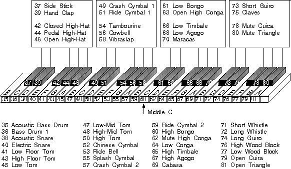

In MIDI, timbre (the sound of a specific instrument; for example, a violin or a trumpet) for most instruments is assigned a specific number. For example, voice 56 represents a trumpet sound. Thus, all note values for voice 56 produce notes having the distinctive sound of a trumpet.
Typically, number assignments for percussion instruments are handled differently. Although each percussion instrument has a distinctive sound, all percussion instruments for a particular synthesizer are assigned one voice or timbre number. For example, if a synthesizer specifies that timbre 45 is a PCM percussion set, then note 60 (Middle C) might be for a kettle drum, 61 for a bass drum, 62 for a triangle and so on.
Many manufacturers use percussion and note number assignments that are unique to their hardware. For example, note 60 might be assigned to a kettle drum on one synthesizer model and to castanets on another.
The following figure shows the standard percussion key definitions.
